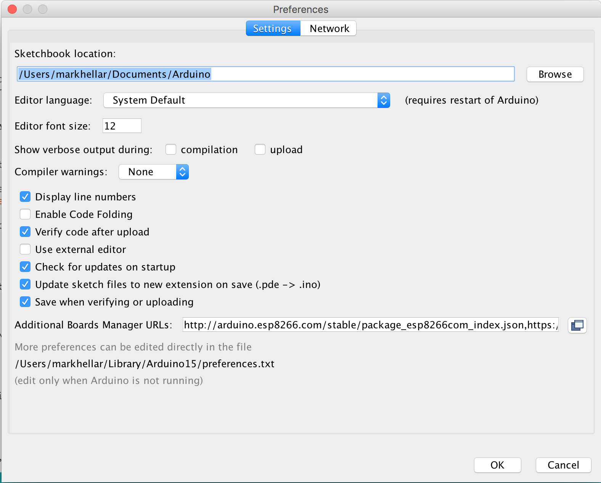
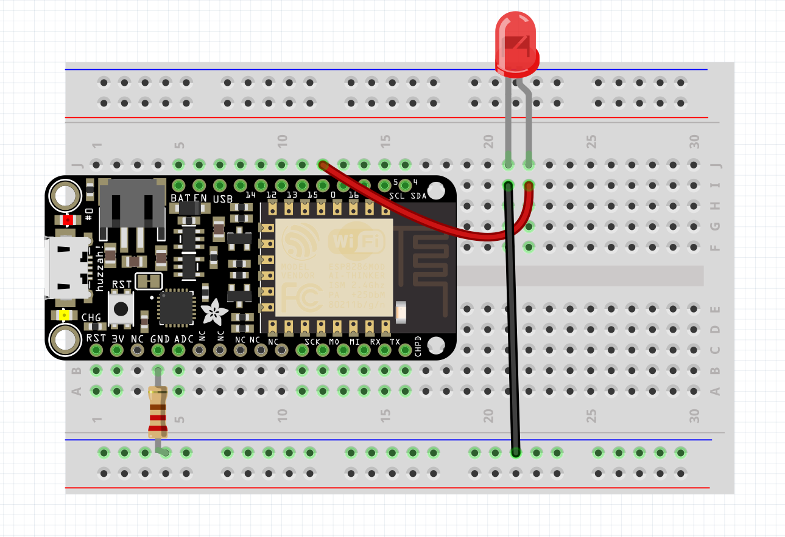
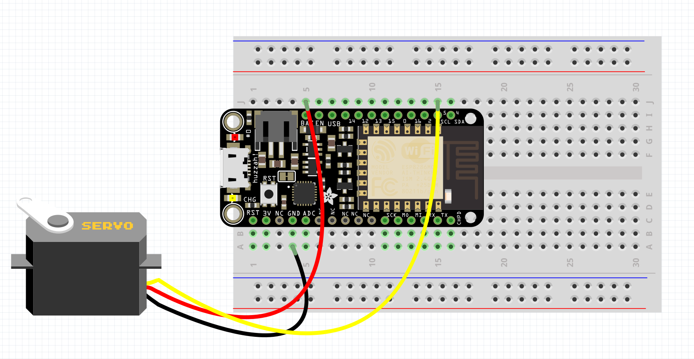
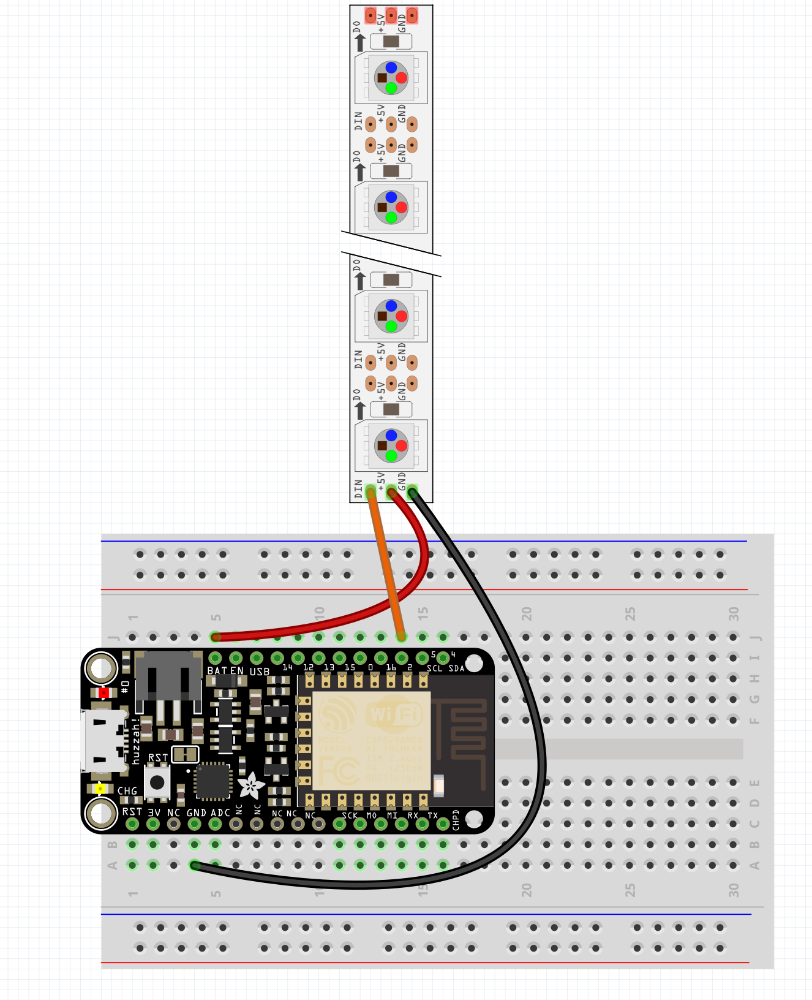

The ESP8266
The ESP8266 is a low-cost Wi-Fi chip with full TCP/IP stack and MCU (Micro Controller Unit) capability produced by Shanghai-based Chinese manufacturer, Espressif Systems.
The Feather ESP8266 is a mini Arduino that is more powerful with Wifi, that is $16.00!
Getting Set up:
- First install the USB driver SiLabs serial driver
Getting Set up:
- Next go to the Arduino Preferences

Enter http://arduino.esp8266.com/stable/package_esp8266com_index.json into Additional Boards Manager URLs
Getting Set up:
- Next, use the Board manager to install the ESP8266 package.

Connect an led

Upload Blink
Upload WiFiWebServer
Upload ESPwebpage
Hook Up A Servo

Upload ESPwebpageServo
Connect some WS2812's

Open WS2812FX/examples/esp8266_webinterface
Change Lines 48 and 49 to the wifi info
Upload
Open the serial Monitor to 115200 baud and hit reset
It will give you the IP address, open this in your webbrowser
Sending OSC data from the ESP
Install https://github.com/CNMAT/OSC
Download zip, extract, remove -master at end
Place in documents/arduino/libraries folder
Open ESP8266sendMessageADXL
Change lines 22 and 23 to the wifi
set line 26 to your computers IP address
cd osc_simple
npm install & node index.js
cd osc_threejs
npm install & node index.js
open localhost:3000